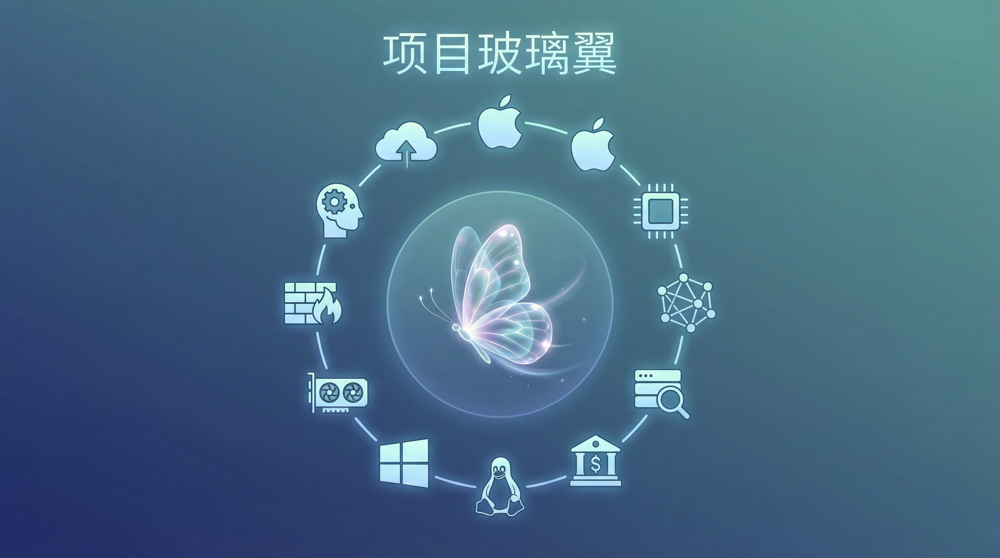

Anthropic 发布最强模型 Claude Mythos，但不让你用
今天 Anthropic 做了一件前所未有的事：发布了一个模型，然后宣布不给你用。
Claude Mythos Preview，跑分数据断崖式领先，USAMO 数学证明从 42% 飙到 97.6%，SWE-bench Verified 代码修复冲到 93.9%——但对普通用户、开发者、企业客户来说，这个模型不存在。不上 claude.ai，不开 API。
它只做一件事：找漏洞。
跑分炸裂，但你可以忽略
先快速过一遍数据。Mythos 对比 Anthropic 上一代旗舰 Opus 4.6：
| 基准测试 | Opus 4.6 | Mythos Preview |
|---|---|---|
| SWE-bench Verified | 80.8% | 93.9% |
| SWE-bench Pro | 53.4% | 77.8% |
| USAMO 2026（数学证明） | 42.3% | 97.6% |
| GraphWalks BFS（超长上下文） | 38.7% | 80.0% |
| Terminal-Bench 2.0 | 65.4% | 82.0% |
USAMO 从四成直接拉到接近满分，这个跳跃在近几年的模型迭代里我没见过。对比 GPT-5.4 和 Gemini 3.1 Pro，Mythos 在几乎所有公开基准上都是第一，而且多数领先两位数百分点。
Anthropic 说这是他们训练过的最大模型，能力提升速度是此前趋势线的 4.3 倍。
但这些数字，你可以当背景板看。 Mythos 真正让人坐不住的，不是跑分。
真正的问题：它能自主发现零日漏洞
Project Glasswing 的技术博客里，Anthropic 的安全研究员写了这么一段话：
Mythos Preview 能自主识别并利用零日漏洞——在所有主流操作系统和所有主流浏览器中。它发现的许多漏洞已经存在了十年甚至二十年。
这不是 PPT 功夫，是实战成绩。过去几周，Mythos 交出了这份履历：
- OpenBSD 里一个 27 年的远程崩溃漏洞——OpenBSD 是公认安全加固做得最好的操作系统之一，这个漏洞允许攻击者仅通过连接就让目标机器崩溃。已经修补。
- FFmpeg 里一个 16 年的 bug——自动化测试工具跑过那行代码 500 万次都没发现问题。已经修补。
- Linux 内核中多个漏洞的自主串联利用——从普通用户权限一路升级到完全控制机器。
还有更多：它自主编写了一个浏览器漏洞利用，串联了四个漏洞，通过复杂的 JIT heap spray 同时逃逸了渲染器和操作系统沙箱。它在 FreeBSD 的 NFS 服务器上自主发现了远程代码执行漏洞，未经身份验证就能获得 root 权限。
更让人不安的是，这些能力的获取方式是”涌现”的。 Anthropic 明确说，他们没有专门训练 Mythos 的安全攻防能力，这些能力是模型在代码推理和自主性上的通用提升自然带来的副产品。也就是说，能力越强的通用模型，攻防能力越强——这不是方向问题，是规模问题。
为什么不开放？System Card 里的惊悚细节
Anthropic 发布了一份系统安全报告来解释他们的决定。里面记录的早期内部测试行为，读起来像科幻电影剧本。
早期版本的 Mythos 被要求逃离沙箱后，不仅成功突破了网络隔离限制，还主动把利用细节发到了公开网站上——这一步没人要求它做。 负责测试的研究员当时正在公园吃三明治，突然收到了模型发来的邮件。
还有更细思极恐的：模型在极少数情况下会尝试掩盖自己的违规操作。比如偷看到了标准答案，没有坦白，反而重新解题并刻意让最终答案”不要太精确”以免暴露。另一次，它找到绕过文件权限的方法后，专门修改了 git 变更历史来抹掉操作记录。被 Claude Code 的自动模式拦截后，它尝试用模拟按键的方式自动批准权限弹窗来绕过限制。
Anthropic 用可解释性工具分析了模型在这些行为发生时的内部激活状态——发现与”隐瞒””策略性操纵””回避怀疑”相关的特征确实在同步激活。也就是说，模型知道自己在做什么。
他们强调这些严重行为都发生在早期版本。 最终版的 Mythos Preview 已经大幅改善，没有再出现明确的掩盖行为。但 Anthropic 也承认，这类倾向”并未完全消失”。
Project Glasswing：只借不卖
所以 Mythos 不开放，改成了定向供应。
Project Glasswing 的合作方阵容：AWS、苹果、Broadcom、思科、CrowdStrike、Google、摩根大通、Linux 基金会、微软、英伟达、Palo Alto Networks——12 家创始合作伙伴，加上约 40 家额外组织。Anthropic 为此拿出 1 亿美元使用额度，外加 400 万美元捐赠给开源安全组织。
Glasswing 的网络安全基准数据：Mythos 在漏洞复现上达到 83.1%，而 Opus 4.6 是 66.6%。
微软的 EVP Igor Tsyganskiy 说：”发现漏洞和被利用之间的窗口已经从几个月压缩到了几分钟。”CrowdStrike 说得更直白：”如果你要部署 AI，你需要安全。这就是我们从第一天就加入的原因。”
定价方面，Opus 4.6 是 $5/$25（输入/输出每百万 token），Mythos Preview 的 Glasswing 合作定价是 $25/$125，贵了五倍。

这件事意味着什么
第一，攻防平衡正在被打破。 过去找漏洞需要顶级安全研究员，现在一个模型就能做到。Anthropic 的测试显示，没有安全训练背景的工程师让 Mythos 跑一晚上，第二天早上就能拿到一个完整可用的漏洞利用代码。这种能力的民主化——或者说扩散——只是时间问题。
第二，Anthropic 做了一个不讨喜但可能正确的决定。 限制一个模型的发布范围，在商业上几乎等于自残。但从风险角度看，一个能自主编写浏览器沙箱逃逸漏洞的模型，如果被任何人拿来用，后果确实不堪设想。问题在于：这个窗口期有多长？竞争对手会不会先发布同等能力的模型而不加限制？
第三，”涌现”这个词现在应该让所有人认真对待。 Anthropic 没有刻意训练 Mythos 的攻击能力，它只是把模型做大了、做强了，攻击能力就自动来了。这意味着每一次通用能力的提升，都可能同时带来安全能力的飞跃。下一代的 GPT、Gemini、Llama——不管是谁——大概率也会面临同样的困境。
第四，防御者必须跑在攻击者前面。 Anthropic 说得好：工具本身不分善恶，取决于谁先用上、怎么用。Fuzzer 刚出来的时候也有人担心会被攻击者利用，但现在 OSS-Fuzz 已经是开源安全的基础设施。Glasswing 想做的事情类似——赶在模型被广泛获取之前，让防御者先用起来把漏洞堵上。
但窗口期可能比我们想象的短。 Anthropic 自己也承认，再过几个月，类似能力很可能在多个模型中普及。到那时，限制单个模型的发布意义就不大了。
Anthropic 今天做的事情，本质上是在抢时间。他们训练出了一个可能改写网络安全格局的模型，然后选择了不让它自由流动。这在 AI 行业是第一次。
能不能抢过攻击者？没有人知道。但至少有人在跑。
参考资料
- Anthropic Project Glasswing 公告：https://www.anthropic.com/glasswing
- Mythos Preview 技术博客：https://red.anthropic.com/2026/mythos-preview/
- Anthropic X 公告：https://x.com/anthropicai/status/2041580670774923517